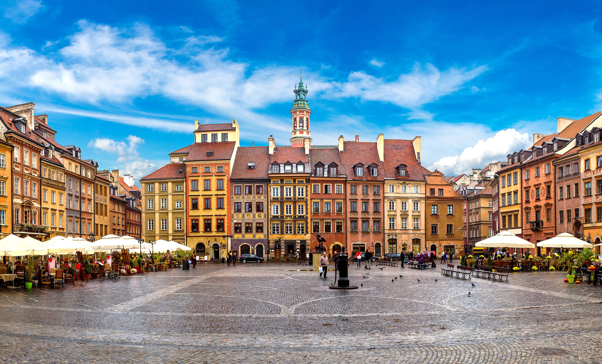
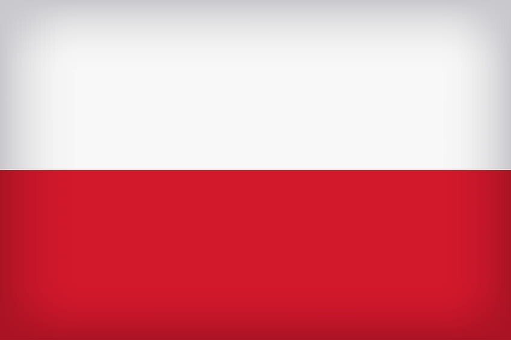
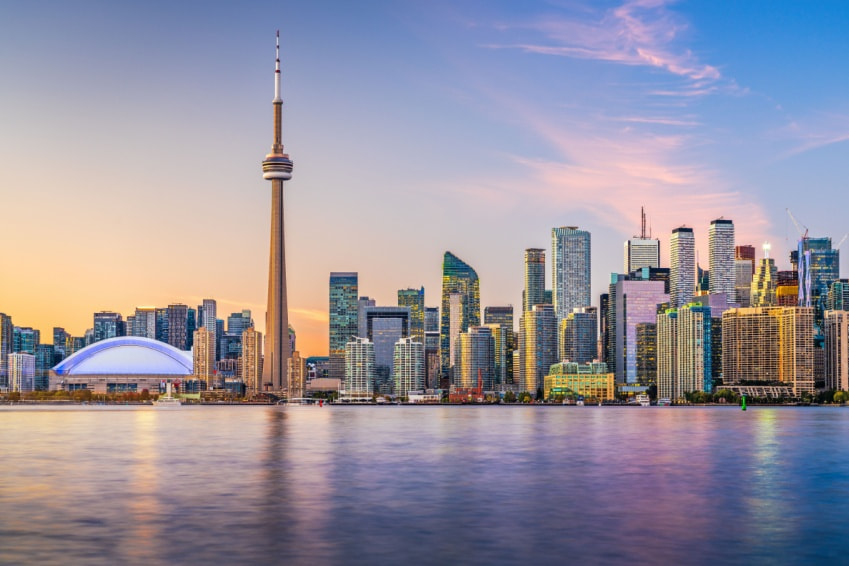
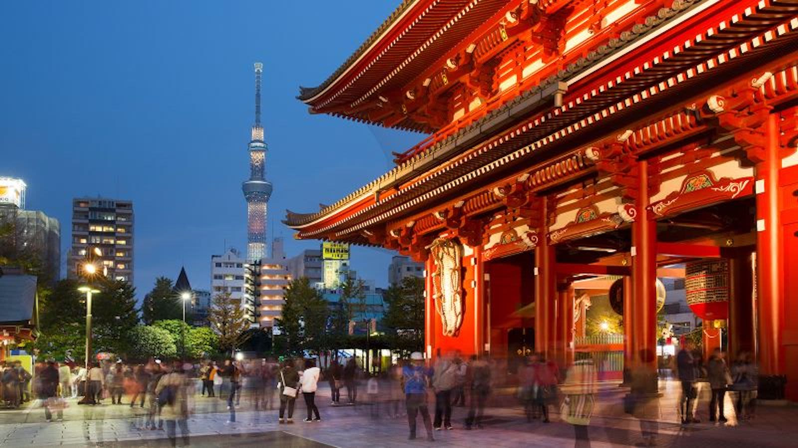
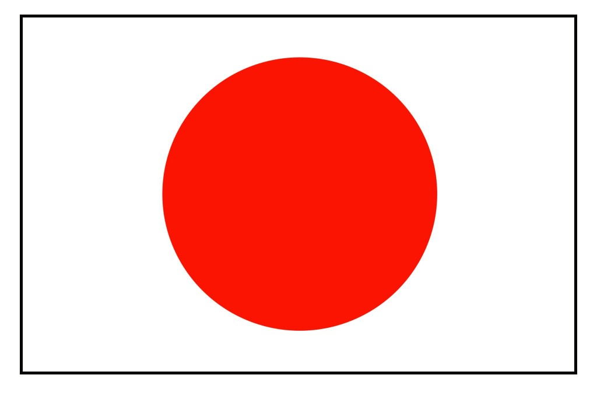
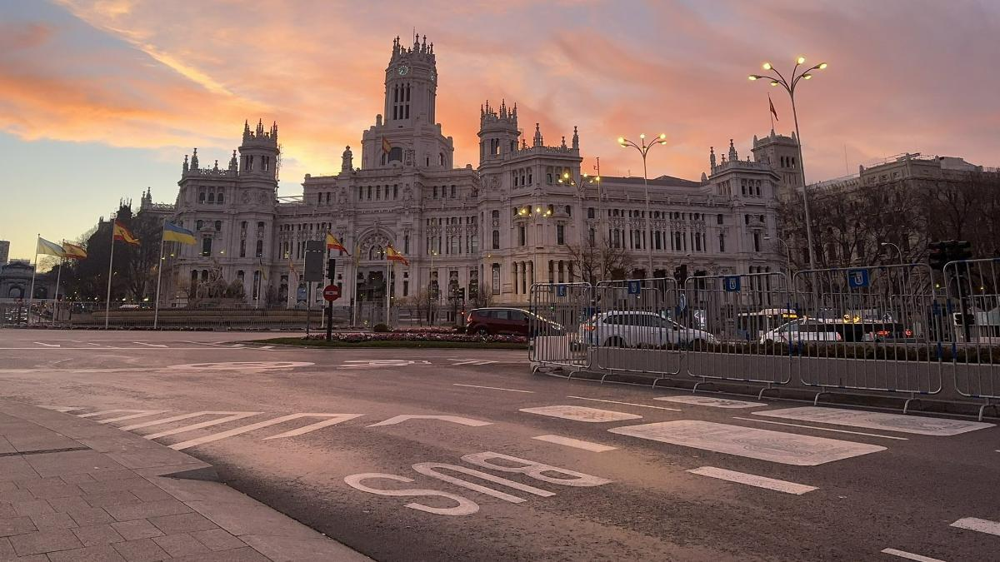
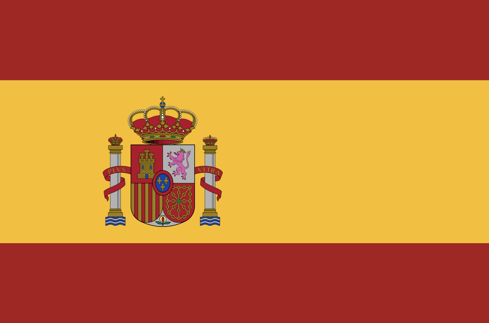
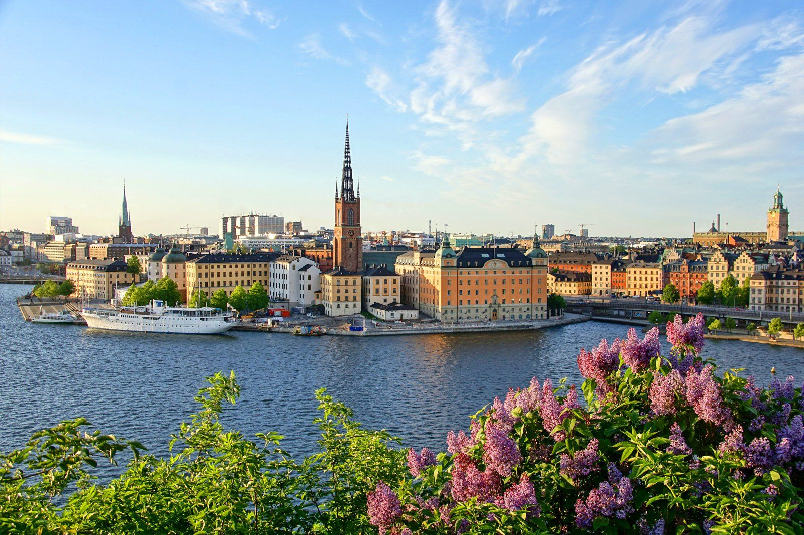
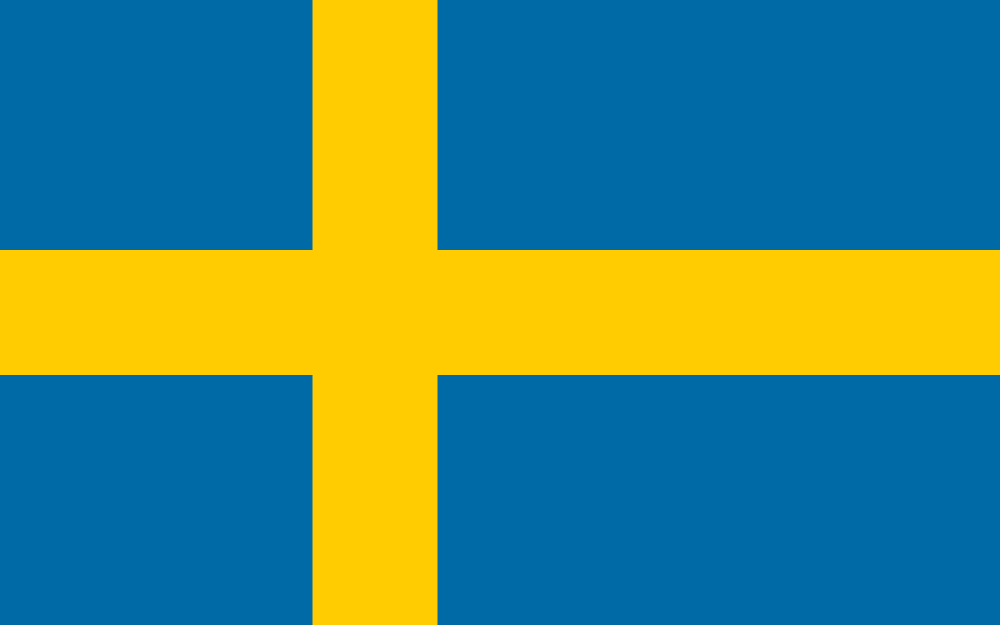

Navigation
Warsaw

Warsaw is the capital and largest city of Poland, known for its meticulously reconstructed Old Town and dynamic modern skyline.
- Province/State: Masovian Voivodeship
- Country: Poland
- Population: 1.8 million
- Latitude & Longitude: 52.2297° N, 21.0122° E
- Flag:

Toronto

Toronto is Canada's largest city and a dynamic, multicultural metropolis famous for the iconic CN Tower and its bustling arts scene.
- Province/State: Ontario
- Country: Canada
- Population: 3 million
- Latitude & Longitude: 43.6532° N, 79.3832° W
- Flag:

Tokyo

Tokyo is Japan's busy capital, mixing ultramodern neon-lit skyscrapers with historic temples and peaceful gardens.
- Province/State: Tokyo Metropolis
- Country: Japan
- Population: 14 million
- Latitude & Longitude: 35.6762° N, 139.6503° E
- Flag:

Madrid

Madrid is the lively capital of Spain, celebrated for its elegant boulevards, expansive parks, and world-class art museums.
- Province/State: Community of Madrid
- Country: Spain
- Population: 3.3 million
- Latitude & Longitude: 40.4168° N, 3.7038° W
- Flag:

Stockholm

Stockholm is the stunning capital of Sweden, built across 14 islands and renowned for its medieval architecture and vibrant culture.
- Province/State: Stockholm County
- Country: Sweden
- Population: 1 million
- Latitude & Longitude: 59.3293° N, 18.0686° E
- Flag:
